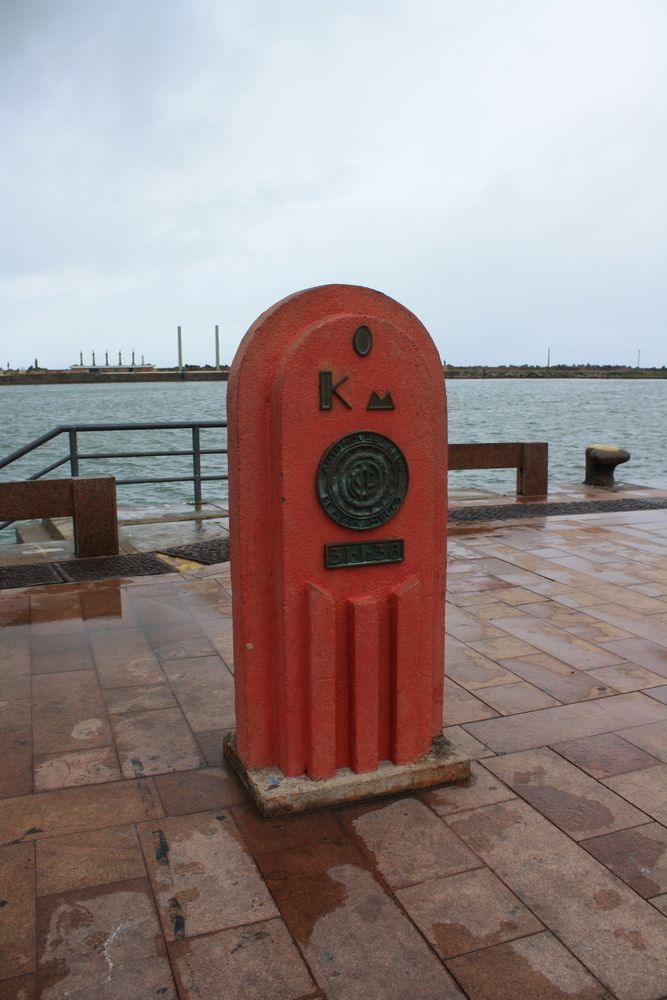
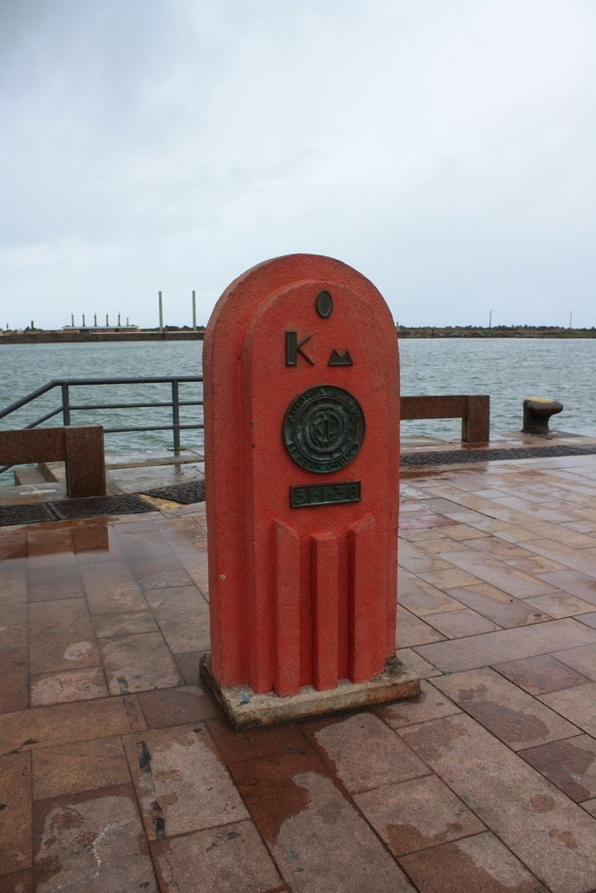

Marco Zero da cidade de Recife
O Marco Zero se encontra na cidade de Recife na Praça Rio Branco, e é também conhecido como o local de fundação da cidade do Recife e também como ponto inicial de contagem das distâncias calculadas a partir da cidade... O mesmo é bastanta frequentado durante o Carnaval, Natal e Festas Juninas, e esse local cultural existe desde 1537, desempenhando um papel crucial na história colonial do Brasil. O Marco Zero também está situado no Recife Antigo, e esse bairro histórico abriga muitas construções antigas preservadas, museus e centros culturais. Caso você esteja interessado em visitar o Marco Zero, é aconselhável contratar um guia turístico para um melhor entendimento sobre o contexto histórico do local, portanto, logo abaixo irei disponíbilizar uma forma de contactar um guia.

 
